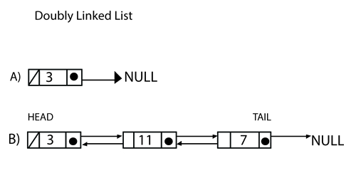
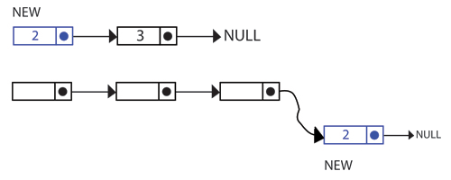

Linked List
Definition
Linked Lists come in two forms: Singly Linked List, and Doubly Linked List.
A Singly Linked List is an ordered series of nodes. Each of these nodes contains a value, and pointer to the next node in the list. In the case of the last node, there is a null pointer. This simply means we have reached the end of the list and there are no more nodes left.
For a doubly linked list, the difference is that it contains a pointer to the previous node also. See the examples below to get a visual interpretation of how they differ.
How they work
In the example below we have a singly linked list with one node, which has a value "3" and a pointer to null. Also present is another singly linked list with many nodes "linked" together. The last node also points to null because there are no more nodes currently present.
In the case of the doubly linked list with one element the left pointer is null and so is the right pointer. For the doubly linked list with multiple elements, the left pointers point to the prevous node, and the right pointers to the next node.
When dealing with singly linked lists that contain multiple nodes, the first node is referred to as the "head" and the last node is refered to as the "tail".
Adding elements to a list
The first task to do is to check if the head of the list is equal to null - this means that the list is currently empty. After we add our new node in, it will be both the head and tail of the list.
If this is not the case we simply add the node at the tail of the list and update the tail (the node we just added is now the tail)
Animation
Insertion
Deletion
Complexity
The time complexities of functions for a linked list with n nodes are the following:
-
O(1)
- size
- addFirst
- removeFirst
- add (doubly linked list)
- remove (doubly linked list)
- addLast (doubly linked list)
- removeLast (doubly linked list)
- O(N)
- get
- remove
- index
- add (singly linked list)
- remove (singly linked list)
- addLast (singly linked list)
- removeLast (singly linked list)
Advantages
Singly Linked Lists
As there is only one pointer per node, we save space storing and retrieving elements. The list uses only as much memory as it requires, and will grow arbitrarily in size.
Doubly Linked Lists
Because it has both left and right pointers, a doubly linked list can traverse in both directions. This bi-directional feature increases performance for storing and retrieving elements.
Disadvantages
Singly Linked Lists
A singly linked list can only traverse in one direction, thus limiting its performance ability. You cannot go back to a previous node, you must restart from the beginning.
Doubly Linked Lists
As there are two pointers in a doubly linked list, it takes up more memory. Traversing in both directions takes more time when updating pointers.
Implementation
A singly linked list isn't too difficult to implement. We're going to break it up into its various methods and desribe each one.
Firstly, we have a constructor - which creates an empty list and holds the object type.
Next, we have a function to add elements to the list.
This add function will insert the element at a specific position in the list, indicated by the index. If the index is out of range, the function throws an exception.
The size function will return the amount of elements in the list.
This function will return the index of of the element in the list.
The get method will return an element in the list specified by its index.
This function will insert an element at the beginning of the list.
Respectively, this function will add the element to the end of the list.
The remove function does as it says, it will remove an element at a specified index in the list.
Finally, this function will remove the element located at the tail of the list.